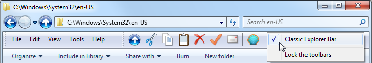

Classic Explorer
Classic Explorer
Classic
Explorer es un complemento para el Explorador de Windows que:
- Agrega una barra de herramientas al Explorador para algunas operaciones comunes (Ir
a carpeta principal, Cortar, Copiar, Pegar, Eliminar, Propiedades, Correo electrónico). La barra de herramientas es completamente personalizable
- Reemplaza la IU de copia en Windows 7 por la versión «clásica» más fácil de usar, similar a la de Windows XP
- Atiende Alt+Entrar en el panel de carpetas del Explorador de Windows y muestra las propiedades de la carpeta seleccionada
- Tiene opciones para personalizar el panel de carpetas de modo que se parezca más a la versión de Windows XP, o para que no atenúe los botones de expansión
- Puede mostrar el espacio disponible en disco y el tamaño total de los archivos seleccionados en la barra de estado
- Puede deshabilitar las rutas de navegación en la barra de direcciones
- Corrige
una larga lista de características que se han roto en Windows 7 – falta del icono superpuesto en las carpetas compartidas, las carpetas que en el panel de navegación van de un lado a otro,
falta de cabeceras de ordenación en vista de lista y más
Nueva IU de copia (sólo Windows 7)
Cuando en Vista copia archivos y hay algún conflicto, se le presenta
esto:

¿Qué tiene de malo?
Bueno, para
principiantes es media pantalla de texto que tienen que leer. Tampoco
resulta inmediatamente claro en qué partes de ésta se puede hacer clic. Tiene que
ir moviendo el mouse para descubrir la IU como en un juego de aventuras de Lucas Arts. Y finalmente la usabilidad con el teclado es horrible. ¡Para
decirle
«sí, sé lo que hago; quiero sobreescribir todos los archivos» tiene que
presionar Alt+H, arriba, arriba, arriba, Espacio! Es más difícil que realizar la toma Akuma
Kara Demon en Street Fighter 3. Hay un tiempo y lugar
para
estas cosas, y no lo es la copia de archivos.
El complemento Classic Explorer trae de regreso el cuadro de diálogo más simple de Windows XP:

Resulta
inmediatamente claro dónde se puede hacer clic (pista – los botones de
abajo), la navegación con el teclado es fácil (presione S para «Sí», T para
copiar todos los archivos) y sigue pudiendo ver cuál archivo es más nuevo y cuál más
grande. Y por supuesto, igual que en Windows XP, manteniendo presionada Mayús mientras se hace clic en el botón No significa "No a todo" (o tan sólo presionar Mayús+N).
Si hace clic
en Más…, obtendrá
el diálogo original de Windows. Desde allí verá
todos los detalles y obtendrá una opción extra para «Copiar, pero
conservar ambos archivos».
Nota importante: Sólo se reemplaza la IU. El sistema subyacente que realmente hace la copia no se ve afectado.
Alt+Entrar en el panel de carpetas
Alt+Entrar es
el método abreviado universal en Windows para desplegar las propiedades de la
selección. Pero en las versiones de Windows más nuevas no funciona en el panel
izquierdo que muestra las carpetas. Funciona bien en el derecho en que están
los archivos. Está roto comparado con Windows XP, donde Alt+Entrar funciona
en ambos lugares.
Para resolver el
problema, el complemento Classic Explorer detecta cuando presiona Alt+Entrar
y muestra las propiedades de la carpeta seleccionada actualmente.
Barra de herramientas para el Explorador de Windows
El
Explorador de Windows en Vista no tiene una barra de herramientas como el de Windows XP. Si
desea ir a la carpeta principal, tiene que usar la barra de rutas de
navegación. Si desea copiar o eliminar un archivo con el mouse, tiene que
hacer clic con el botón secundario y buscar el comando Eliminar. El menú del botón secundario se
agranda y agranda cuantas más extensiones va instalando, y
encontrar el comando adecuado puede demorar.
Para resolver el problema, el complemento Classic Explorer agrega una barra de herramientas nueva:

Los botones disponibles son: Subir, Cortar, Copiar, Pegar, Eliminar, Propiedades,
Correo electrónico, Configuración. Pueden agregarse más botones desde el diálogo Configuración.
Sugerencias:
- Mantenga presionada la tecla Control cuando haga clic en el botón Subir para abrir la carpeta principal en una nueva ventana del Explorador.
- Mantenga presionada la tecla Mayús cuando haga clic en el botón Eliminar para eliminar un archivo de forma permanente
La barra de herramientas nueva no se muestra en el Explorador automáticamente después
de la instalación. Antes de poder usarla, debe hacer un par de cosas:
- Abra una nueva ventana del Explorador de Windows (tecla Win+E)
- Active el menú del Explorador – Vaya a Herramientas (Alt+H), Opciones
de carpeta, la pestaña Ver, y asegúrese de que «Mostrar siempre menús» esté marcado.
- Haga clic con el botón secundario en la barra de menús y seleccione «Classic Explorer Bar» para
mostrar la barra de herramientas.
- Si dicha opción no está disponible (sólo ve «Bloquear las
barras de herramientas), quizá tenga que habilitar el complemento desde Internet Explorer.
Ejecute IE, haga clic con el botón secundario en su barra de herramientas y seleccione «Classic Explorer Bar».
Le preguntará si desea habilitar este complemento. Seleccione «Habilitar»,
acto seguido repita los pasos del 1 al 3.
- Si aun así no ve la barra de herramientas, puede que las extensiones
de explorador estén deshabilitadas en su sistema. Suele ser lo predeterminado en
servidores. Abra las "Opciones de Internet", vaya a la pestaña "Opciones avanzadas" y marque
la opción "Habilitar extensiones de explorador de terceros".
Barra de estado
Classic Explorer restaura la barra de estado original del Explorador que muestra el espacio disponible en disco y el tamaño de los archivos seleccionados:

A diferencia de la barra de estado integrada, se muestra el tamaño de la selección aun si
se seleccionan más de 100 archivos. Cuando no hay archivos seleccionados, se muestra
el tamaño total de todos los archivos de la carpeta.
Nota sobre Windows 7: Classic Explorer mejora la
barra de estado predeterminada en lugar de reemplazarla. Para verla, primero tiene que activarla
desde el menú Ver.
La barra de estado es distinta del Panel
de Detalles azul que ve en la parte inferior del Explorador. Puede desactivar el
Panel de Detalles desde el menú Organizar para ahorrar espacio. Asimismo, hay un bug
en el Explorador de Windows 7 por el que a veces no se muestra ningún texto en la
barra de estado. Para actualizar la vista y obtener el texto de estado, presione F5.
Nota sobre Windows 8: Classic Explorer agrega su propia
barra de estado. Debería ocultar la barra de estado predeterminada para ahorrar espacio.
Seleccione la pestaña Vista en la cinta de opciones, luego haga clic en Opciones. Seleccione la
pestaña Ver en las opciones. Halle la casilla "Mostrar barra de estado" y
desmárquela.
Configuración
Puede tener acceso a la configuración de Classic Explorer desde la barra de herramientas o desde el menú inicio:
Puede elegir entre ver sólo las configuraciones básicas o todas
las configuraciones disponibles. Sitúe el mouse sobre cada configuración para ver una descripción de
para qué sirve. Para buscar una configuración por su nombre, escriba en el cuadro de búsqueda.
Toda configuración tiene un valor predeterminado. El valor predeterminado puede ser constante,
o depender de la configuración actual del sistema. Una vez que edite una
configuración, se volverá "modificada" y se mostrará en negrita. Para revertir al
valor predeterminado, haga clic con el botón secundario en la configuración.
Puede guardar las configuraciones en un archivo XML, y ulteriormente volver a cargarlas.
Para tener acceso a estas funciones, pulse el botón Copia de seguridad. Desde allí también puede
restablecer todas las configuraciones a sus valores predeterminados.
Para almacenar sus configuraciones, pulse Aceptar. La mayoría de las configuraciones se aplicarán
la próxima vez que abra una nueva ventana del Explorador. Un número reducido de configuraciones
requerirán que antes de poder ver el cambio cierre la sesión.
Nota: Todas las ventanas de Configuración son redimensionables. Redimensiónelas y colóquelas donde desee que estén. Recordarán la posición nueva.
Aquí va un ejemplo de lo que se puede personalizar:

Para personalizar la barra de herramientas, haga clic en la pestaña Botones de la barra de herramientas:

La columna de la izquierda muestra los botones actualmente en la barra de herramientas,
y la columna de la derecha lista los botones que puede agregar a la
barra de herramientas. Puede arrastrar y colocar botones de la columna derecha a la
izquierda. Puede
reordenar los botones arrastrándolos hacia arriba o hacia abajo. Si coloca un botón dentro de otro, creará un submenú.
Sitúe el mouse
sobre cada botón para ver una descripción breve de lo que hace. Para tener acceso a más funciones (como Eliminar, Cambiar nombre, etc.), haga clic con el botón secundario en cada botón. Desde el
menú del botón secundario también puede restablecer la barra de herramientas al estado original.
Cada elemento de la columna izquierda debe tener un nombre único. Es el
identificador del elemento y sólo puede contener guion bajo, letras y números en
inglés. A algunos elementos (como SEPARADOR) no se les puede cambiar el nombre.
Nota importante: No todos los comandos disponibles tienen iconos o texto predeterminados. Eso es porque Windows no posee iconos para cosas como Deshacer, Seleccionar todo, etc. Si desea usar dichos botones en la barra de herramientas, tendrá que proporcionar su propio icono. Vea a continuación cómo hacerlo.
Después de colocar un botón en la barra de herramientas, puede editar sus atributos. Para editar, haga doble clic en el botón:

Aquí puede seleccionar un comando para el botón, su texto y su icono. Para obtener el texto e icono predeterminados del comando que eligió, pulse el botón Restaurar predeterminados.
El comando puede:
- dejarse en blanco - si se usa el atributo vínculo, actuará como un comando
- ser alguno de los comandos predefinidos - del desplegable
- ser open <alguna carpeta> - esto abrirá la carpeta en el navegador actual
- ser sortby <propiedad> - ordenará la carpeta según la propiedad dada - name, type, size o date. Use '-' antes de la propiedad para ordenar descendentemente: "sortby -name". Puede usar otras propiedades si sabe sus códigos. Por ejemplo, "sortby {B725F130-47EF-101A-A5F1-02608C9EEBAC}, 10" es igual que "sortby name". Para códigos de más propiedades, remítase al archivo propkey.h en el SDK de Windows (se encuentra asimismo aquí - desplácese hacia abajo hasta "Full property table"). No todos los códigos de propiedades son válidos o compatibles (por ejemplo la propiedad año del álbum {56A3372E-CE9C-11D2-9F0E-006097C686F6}, 5 sólo funciona al mostrarse álbumes de música)
- ser groupby <propiedad> - similar a sortby, pero agrupa los archivos según la propiedad dada. Para deshabilitar el agrupamiento, use el comando groupby sin ninguna propiedad
- ser una cadena personalizada del ejecutable
- pueden ser el nombre de un programa y sus argumentos, o incluso una URL
(como http://www.google.com). Puede usar variables de entorno como %SystemRoot%. También puede usar los
marcadores de posición %1, %2, %3, %4 y %5:
- %1 es la ruta a la
carpeta actual. Tenga en cuenta que, si la carpeta actual es la raíz de una
unidad, terminará con una barra invertida (como C:\)
- %2 es la ruta del archivo seleccionado (sólo cuando hay un solo archivo
seleccionado)
- %3
es el nombre de un archivo de texto temporal que contiene todos los archivos seleccionados.
Cada línea del archivo de texto contiene un archivo con su ruta completa
- %4
es lo mismo que %3, pero el archivo está en formato Unicode (UTF16). El archivo
no contiene marca de orden de bytes. %3 y %4 no pueden usarse ambos en el mismo comando
- Nota para desarrolladores: Al
usar %3 o %4, es responsabilidad del comando eliminar el
archivo temporal cuando finalice. De lo contrario, el archivo temporal se quedará en
el camino y gastará espacio en disco. Asimismo, si el comando es una aplicación de consola
o un archivo por lotes, se iniciará en modo silencioso sin ventana
de consola
- %5 es el nombre de un
archivo de texto temporal que se puede usar para devolver un comando a
Classic Explorer. Si los primeros 2 bytes del archivo son 255 y 254, el
archivo se trata como Unicode. Sólo se puede usar un comando a la vez. El comando
puede ser:
- open <nombre de carpeta> - hace que el Explorador navegue a la carpeta dada
- select <lista de nombres de archivo>
- selecciona los archivos dados, anula la selección del resto. Los nombres de archivo deben
separarse un carácter de tabulación o de nueva línea. Los archivos no deberían contener
la ruta. De contenerla, la ruta se ignorará
- refresh - actualiza el Explorador
- Nota para desarrolladores:
los comandos que usen %5 se ejecutarán en modo silencioso (como los comandos que usen %3 o
%4), pero
también el Explorador esperará que el proceso finalice. El proceso debe
finalizar tan rápido como sea posible, porque durante la ejecución del comando
el Explorador se congelará
- Para algunos ejemplos de uso de estos parámetros, vea la sección siguiente
El vínculo puede ser una ruta a un archivo o carpeta. Si es un archivo, se
ejecutará dicho archivo. Si es una carpeta, se abrirá dicha carpeta como
un submenú (sólo para botones de nivel superior).
El icono puede:
- dejarse en blanco - si el atributo vínculo señala a un archivo o carpeta, se usará el icono de dicho archivo o carpeta
- ser archivo de recursos,identificador de icono - por ejemplo %windir%\notepad.exe,2. No deje espacio entre el nombre de archivo y la coma. Asegúrese de que usa el identificador del recurso del icono y no el índice del icono. Para los mejores resultados, use el botón [...] de al lado del cuadro de icono
- ser ,identificador de icono - igual que lo anterior, pero el archivo de recursos es ClassicExplorer.dllen sí. Esto es útil al hacer referencia a iconos propios de Classic Explorer
- ser archivo de icono - por ejemplo C:\Program Files\Mozilla Thunderbird\Email.ico
- ser none - esto usará un icono vacío
Si los atributos etiqueta o consejo empiezan con $ (signo de dólares), el sistema
lo tratará como el nombre de una cadena en el archivo ExplorerL10N.ini. El texto real dependerá de la configuración de idioma actual. Resulta
útil al crear una barra de herramientas que pueda usarse en varios idiomas.
Nota para desarrolladores: Los botones para comandos personalizados pueden marcarse o deshabilitarse. La barra de herramientas busca en la clave del registro HKCU\Software\OpenShell\ClassicExplorer
un valor DWORD con el nombre del botón (el nombre que se usa en la
columna izquierda). 0 significa normal, 1 deshabilitado y 2 marcado. La barra de herramientas
lee las claves del registro al iniciarse. Para forzar que los botones actualicen
su estado con posterioridad tiene que encontrar todas las ventanas del Explorador, hallar
la ventana secundaria con clase OpenShell.CBandWindow y publicar un mensaje WM_CLEAR. Resulta útil si está desarrollando un exe personalizado para usar con la barra de herramientas.
Ejemplos de comandos personalizados
0) Use comillas cuando sea necesario
Para admitir rutas que
contengan espacios, debería rodear los parámetros de la ruta entre comillas. No
siempre se requieren las comillas, como en los ejemplos 1 y 2 a continuación. Para
evitar sorpresas, asegúrese de probar sus comandos con rutas que contengan
espacios.
1) Imprimir la carpeta actual
Use este comando: cmd.exe /k echo %1. %1 se reemplazará por la ruta de la carpeta actual.
2) Abrir el archivo seleccionado en el Bloc de Notas
Use este comando: %SystemRoot%\notepad.exe %2.
%2 se reemplazará por el nombre completo del archivo seleccionado. No es
necesario que esté entre comillas, pues el Bloc de Notas usa toda la línea de comandos como
nombre de archivo.
3) Copiar los archivos seleccionados a la carpeta principal
Cree un archivo por lotes que se llame C:\CopiarPrincipal.bat:
set list=%1
set list=%list:"=%
for /F "delims=" %%i in (%list%) do copy /Y "%%i" ..
del %1
Use este comando: C:\CopiarPrincipal.bat "%3".
%3 se reemplazará por un archivo de texto que contiene los nombres completos de todos
los archivos seleccionados. El archivo por lotes leerá cada línea de dicho archivo de texto
y copiará cada uno de los archivos seleccionados a la carpeta principal. Al finalizar,
el archivo por lotes elimina el archivo
temporal inicial. Los primeros dos comandos set quitan las comillas del parámetro %1.
4) Seleccionar todos los archivos de texto
Cree un archivo por lotes que se llame C:\SeleccionarTexto.bat:
echo select > %1
dir *.txt /b >> %1
Use este comando: C:\SeleccionarTexto.bat "%5".
%5 se reemplazará por un archivo de texto vacío, en el que el comando debe volcar
la palabra "select" y una lista de los archivos que desea seleccionar. El comando "dir
*.txt /b" proporciona dicha lista.
Configuración administrativa
Las configuraciones son
por usuario y se almacenan en el registro. De manera predeterminada, todos los usuarios pueden editar
toda su configuración. Un administrador puede bloquear configuraciones específicas, de
modo que ningún usuario las pueda editar:

En este ejemplo, la configuración "Mostrar el botón Subir" está bloqueada para que siempre esté
"Antes de Atrás/Adelante" y ningún usuario la pueda cambiar. Esto se logra
agregando la configuración a la clave del registro HKEY_LOCAL_MACHINE\SOFTWARE\OpenShell\ClassicExplorer. Cree un valor de cadena llamado "ShowUpButton" y establézcalo en "BeforeBack".
En algunos casos quizá no desee bloquear el valor para todos los usuarios, sino
simplemente modificar el valor inicial de la configuración. En tal caso, agregue
"_Default" al nombre del valor. Por ejemplo, si desea que el botón
Subir esté antes de Atrás de manera predeterminada pero seguir permitiendo que los usuarios lo cambien
si les place, cree un valor de cadena con nombre "ShowUpButton_Default" y
establézcalo en "BeforeBack".
La manera más fácil de saber el nombre de una configuración en el registro y su valor es modificarla, y acto seguido buscarla en HKEY_CURRENT_USER\Software\OpenShell\ClassicExplorer\Settings.
Puede que a veces desee bloquear una configuración en su valor predeterminado, pero no
sabe cuál es el valor predeterminado. De ser así, cree un valor DWORD y establézcalo
en 0xDEFA.
También hay una configuración global EnableSettings. Establézcala en 0 en el
registro para evitar incluso que los usuarios abran el diálogo Configuración:

Puede habilitar y deshabilitar Classic Explorer para procesos individuales
usando las 2 configuraciones del registro "ProcessWhiteList" y
"ProcessBlackList". ProcessWhiteList es
una lista de procesos para los cuales Classic Explorer se cargará. Use sólo el
nombre de archivo del proceso (como "notepad.exe"), separe varios nombres
con una coma o un punto y coma. ProcessBlackList
es una lista de procesos para los cuales Classic Explorer no se cargará. Sólo
debería usar una lista de las dos. Si se especifican ambas listas, la
lista de bloqueados se ignorará. Las listas sólo se usan cuando habilita las
características compatibles con otros procesos distintos del Explorador (Explorer). Por el
momento, estas características son: el icono superpuesto en recursos compartidos y los reemplazos
para los diálogos de copia.
También se admite la edición de configuraciones a través de directivas de grupo. Extraiga el archivo PolicyDefinitions.zip que se encuentra en la carpeta de instalación y lea el documento PolicyDefinitions.rtf para más detalles.
Dependencias de configuraciones de Windows
Algunas configuraciones de Classic Explorer requieren que se habiliten configuraciones específicas de Windows:
- Panel de navegación estilo Windows Vista - requiere que Windows use los temas Aero o Básico
- Autonavegar a la carpeta seleccionada
- esta configuración sólo puede establecerse en "Siempre" cuando el Explorador está configurado para
"Expandir automáticamente a la carpeta actual". Fíjese aquello en la pestaña General de Herramientas -> Opciones de carpeta
- Mostrar título en la barra de título
- el título mostrará ya sea el nombre de la ruta completa o el nombre de
la carpeta actual. Para ver la ruta completa, es preciso que habilite "Mostrar
la ruta de acceso completa en la barra de título (sólo en tema Clásico)" en la pestaña Ver de Herramientas -> Opciones de carpeta
- Toda la configuración de la barra de estado - requiere que la barra de estado esté visible (no confundir con el Panel de Detalles). Marque Ver -> Barra de estado
Localización
La interfaz
de usuario (salvo el cuadro de diálogo Configuración) está traducida a 35
idiomas.
El cuadro de diálogo Configuración está traducido a una cantidad de idiomas más pequeña.
La instalación predeterminada sólo lo contiene en inglés. Pueden descargarse más idiomas
desde la página de traducciones. Asegúrese de descargar el paquete de traducción para la versión de Open-Shell exacta.